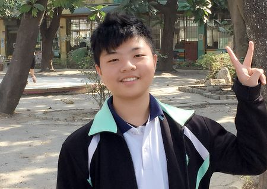
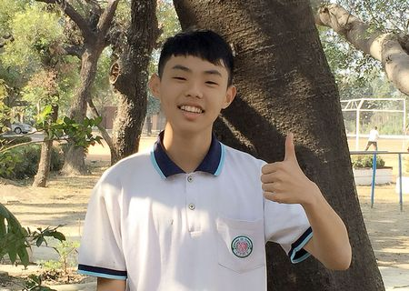
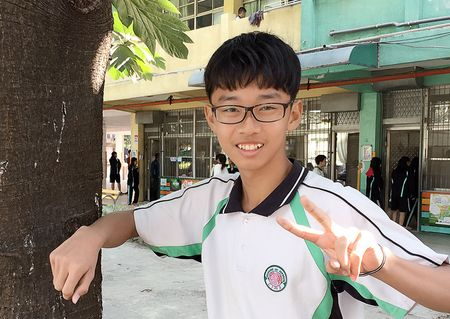
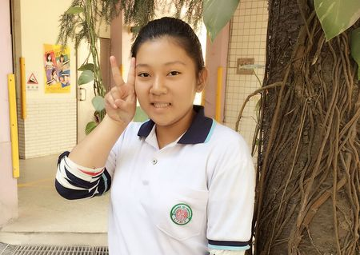
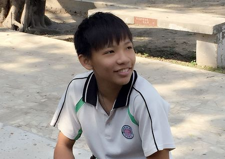
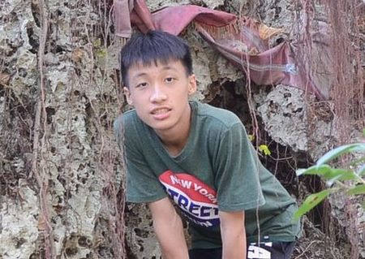
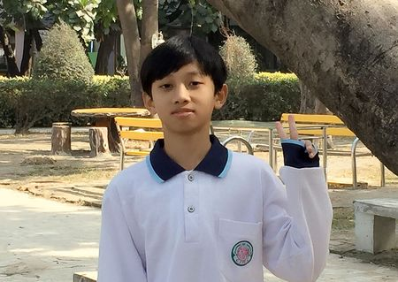
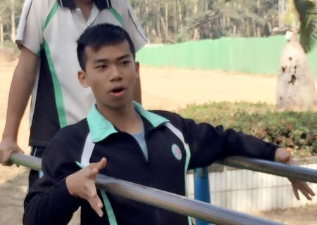
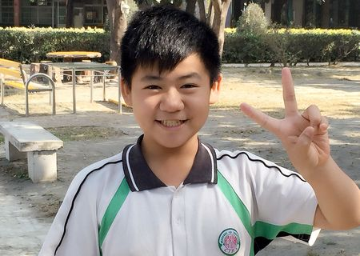

【感謝】 | |
魏麒恩同學這次的活動，實在是學得非常多，謝謝李先生跟我們說這麼多的故事、這麼多的知識，也謝謝老師們教我們如何做事、如何蒐集資料、如何製作網頁，也要謝謝我的這些隊友，幫我們的隊伍做這麼多事，沒你們我我覺得無法做出來這多事，當然也要謝謝清水巖、清水寺給我們採訪，也謝謝學校借給我們設備、電腦 謝謝你們everybody 也謝謝我的身體如此負擔XD 幸好撐得住。 |
 |
|  | 張簡澤丞同學這次的報告讓我更加了解清水巖，這次的報告裡我學習到了許多的歷史文化，例如林半仙的許多傳奇文化，這個報告讓我對清水巖大大的改觀，以前到清水巖就會想到又要來拜拜了，做完報告後才知道其實清水巖是一個非常奇妙的地方，無論是歷史文化還是ㄧ些典故，都讓我學習到了許多，也讓我體會到以前的人在洞窟時的感覺，這次的活動真的讓我學習到了許多，大家也許可以試試看。 |
曾子瑝同學感謝這次參與的成員，和解說人員、軍方和老師們。謝謝軍方同意讓我們去拍先鋒湖，也謝謝解說員願意用自己的假日時間出來跟我們解說【清水嚴】【清水寺】的歷史古蹟和民間傳說。也謝謝這次的指導老師用自己的時間出來陪我們，也謝謝各位同學的幫忙。也謝謝學校放心把那些器材借給我們,還有郭老師願意幫我們拍許多照片。 |
 |
|  | 蔡佳惠同學各位老師及同學的幫忙，如果沒有這次的幫忙我也不會去清水嚴讓我大開眼界! 本來我是沒有時間去!所以我就把握了這個機會去好好的探索好好的去知道這個的歷史及文化等等.......雖然去爬龍蟠洞的時候困難從從，但我還是關關難過關關過克服了裡面的困難，這次的計畫真的很謝謝大家要不是有這個機會!我還真的不知道裡面的事物這麼特別! |
李昶修同學我要感謝同學們，因為他們有去拜訪清水嚴以及古蹟，可以回賴告訴我一些當地的古蹟會者是告訴我一些那時候發生的有趣的事情，幸好有這些同學參與，不然我絕對不知道這些有關清水巖的相關事務與古蹟。 希望以後其他老師還可以繼續辦有古蹟的活動，好讓其他沒參加過的同學或者有參加過的人，可以憶起參加讓活動越來越有趣。 |
 |
|  | 張簡昌逸同學我們去林園清水嚴謝謝軍方有提供一個景點給我們參觀，也謝謝解說員很有耐心一個接一個的帶我們介紹，也很感謝教育局有辦一個這樣的活動，讓我們可以更了解當地的文化特色，然後也謝謝學校借給我們設備讓我們可以拍攝、剪接，讓我們可以學習如何拍攝跟剪接上字幕，這是一般的學校幾乎不會在電腦課教的，但還是最謝謝解說員帶給我們那麼多的字幕。 |
黃培倫同學感謝這次參與的成員，和解說員、軍方。謝謝軍方同意讓我們去拍先鋒湖 也謝謝解說員願意用自己的假日時間出來跟我們解說【清水嚴】的歷史古蹟， 也謝謝這次的指導老師用自己的時間出來陪我們，也謝謝各位同學的幫忙。 |
 |
|  | 陳美任同學這我們是一個團隊,我很感謝夥伴們能在今天放假時候 ,還抽空來訪談,也很感謝老師,老師時間很寶貴很多事要做,當然更感謝的是李先生,每有李先生的解說,我們也不會這麼的順利,還有李先生的研究深感佩服,李先生曾經為了研究隧道從林園走到小港真的很為工作盡責,從此感謝大家的護持幫助，也謝謝指導老師帶我們全部一起去吃飯。 |
陳傑諺同學謝謝老師幫我們規劃一天的行程，還幫我們聯絡李俊福先生，謝謝李俊福先生為我們解說，帶我們去看靈泉池.龍蟠洞…等，讓我們了解清水巖(寺)的歷史和事蹟，真是讓我增廣見聞，大開眼界，我希望下次還有機會能夠好好聽完全部解說。 |
 |